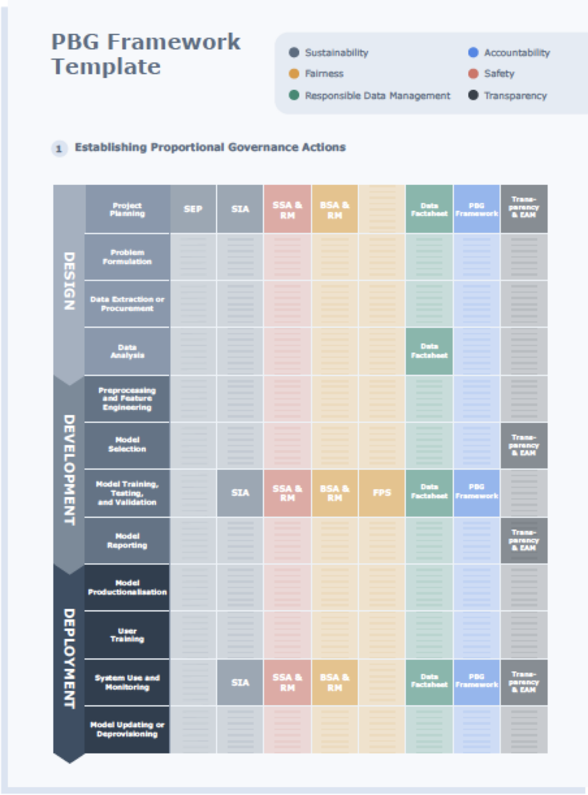
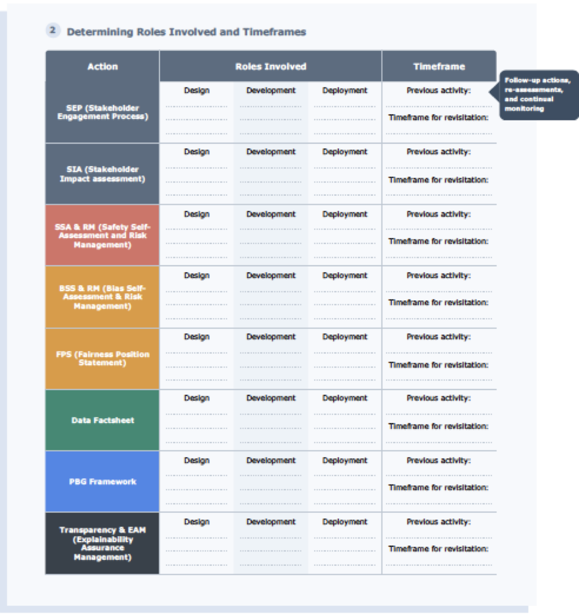
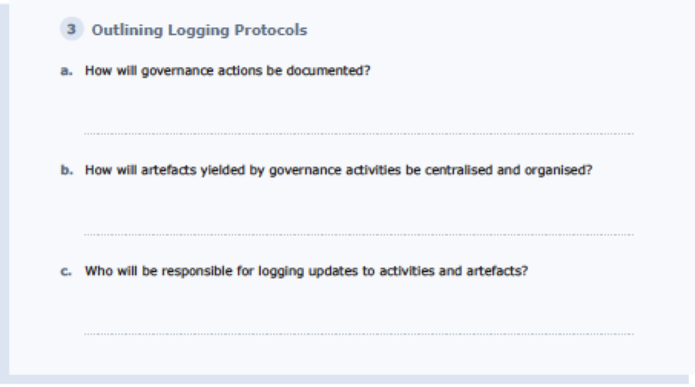
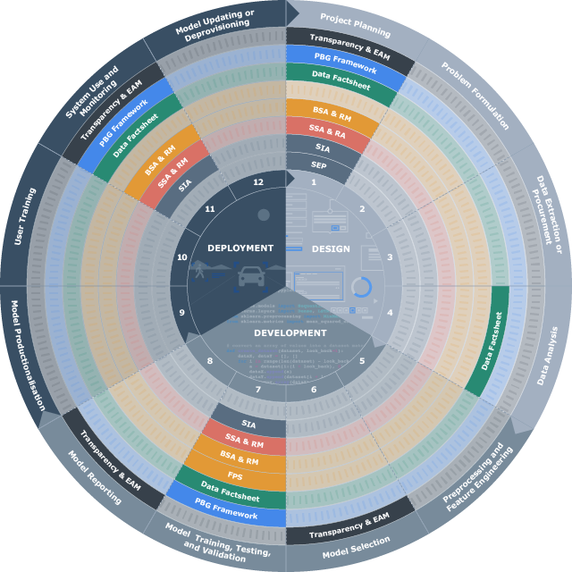

Governance¶
Putting accountability into practice¶
Now that we have explored some of the main aspects of the concept of accountability, we are ready to examine–in greater detail–how elements of answerability and auditability can be put into practice.
The central importance of the end-to-end operability of good governance practices should guide your strategy to embed accountability across the project workflow. Three components are essential to creating a such a workflow:
-
Maintaining strong regimes of professional and institutional transparency.
-
Establishing and maintaining a clear and accessible Process-Based Governance Framework (PBG Framework).
-
Establishing a well-defined auditability trail for your PBG Framework through robust activity logging protocols that are consolidated digitally in a Process Log.
Maintaining professional and institutional transparency¶
At every stage of the design and implementation of your AI project, team members should be held to rigorous standards of conduct that secure and maintain professionalism and institutional transparency. These standards should include the core values of selflessness, integrity, honesty, accountability, openness, sincerity, neutrality, objectivity, impartiality, and leadership.
Furthermore, from start to finish of the AI project lifecycle, the design, development, and deployment process should be as transparent and as open to public scrutiny as possible with restrictions on accessibility to relevant information limited to the reasonable protection of justified confidentiality and of analytics that may tip off bad actors to methods of gaming the system of service provision or otherwise taking advantage of their insight to the detriment of the system's performance or the rest of the users.
Process-based governance framework¶
We have looked at some of the most important values and princciples necessary for establishing responsible innovation practices in the AI project lifecycle.
Perhaps the most vital of these measures is the effective operationalisation of these practices.The recently-adopted standard, ISO 37000, defines governance as ‘the system by which the whole organisation is directed, controlled, and held accountable to achieve its core purpose in the long run’.
Establishing a diligent and well-conceived governance framework that covers the entire design, development, and deployment process will provide the foundation for effectively establishing needed practical actions and controls, exhaustively distributing roles and responsibilities, and operationalising answerability and auditability throughout the AI lifecycle. Organising all of the governance actions into a PBG Framework is a way to better accomplish this task.
The purpose of a PBG Framework is to provide a template for the integrations of the norms, values, and principles, which motivate and steer responsible innovation, with the actual processes that characterise the AI design and development pipeline. Establishing a PBG framework creates the baseline conditions for ensuring that the goal of instituting an AI innovation process that is accountable-by-design is achieved.
A PBG Framework should give the team a landscape view of the governance actions that are organising the control structures of the project workflow. Constructing a good PBG Framework will provide the team with a big picture of:
• The relevant stages of the workflow in which actions are necessary to meet governance goals
• The relevant team members and roles involved in each governance action
• Explicit timeframes for any necessary follow-up actions, re-assessments, and continual monitoring
• Clear and well-defined protocols for logging activity and for instituting mechanisms to assure end-to-end auditability and appropriate documentation
The PBG framework asks that teams not only outline the governance actions established for individual projects, but also roles involved in each action, timeframes for follow-up actions, and logging protocols.



Establishing proportional governance actions¶
Just as with the determination of proportionate stakeholder involvement, the establishment of proportionate governance protocols should involve a preliminary assessment of the potential risks and hazards of the model or tool under consideration. Low-stakes AI applications that are not safety critical, do not directly impact the lives of people, and do not process potentially sensitive social and demographic data may need less proactive governance controls and processes than high-stakes projects.
By completing the Project Summary Report and Stakeholder Impact Assessments, the project team will need to carry out evaluations of the scope of the possible risks that could arise from the project and of the potential hazards it poses to affected individuals and groups. These assessments of the dangers posed to individual wellbeing and public welfare will help formulate proportionate governance actions to be outlined in the PBG framework.
Notwithstanding the importance of the need for this reasonable application of proportionate governance actions, a strong regime of accountability-by-design across the project lifecycle should nonetheless be established. It may be the case that the assessment of potential risks and adverse impacts does not sufficiently anticipate the full range of possible harms. In instances where such unforeseen harms do arise, proper mechanisms of anticipatory accountability and corresponding documentation protocols should already be in place, so that the best practices of the project team are demonstrable.
Here is a summary picture of where all possible governance actions fit across the project workflow:

Each principle can be operationalised through specific processes:
Sustainability
Stakeholder engagement process (SEP)
Process facilitating a contextually informed understanding of the social environment and human factors that may be impacted by, or may impact, individual AI projects, and the uptake of proportionate stakeholder engagement and input throughout the AI lifecycle.
Stakeholder impact assessment (SIA)
Process facilitating the iterative evaluation of the social impact and sustainability of individual AI projects, as well as the corroboration of these potential impacts in dialogue with stakeholders, when appropriate.
Safety
SSA & RA (Safety Self-Assessment and Risk Management)
Process facilitating the evaluation of how AI projects align with safety objectives through the iterative identification and documentation of risks of potential safety risks across the lifecycle, and assurance actions implemented to address these.
Responsible data management
Data factsheet
Live document facilitating the uptake of best practices for Responsible Data Management and Stewardship across the AI project workflow by facilitating the documentation of a comprehensive record of the data lineage iterative assessments of data integrity, quality, protection, and privacy.
Fairness
BSA & RM (Bias self-assessment & risk management)
Process facilitating the evaluation of how AI projects align with the principle of fairness through the iterative identification and documentation of risks of bias across the lifecycle, and assurance actions implemented to address these.
Fairness position statement
Document establishing the metric-based fairness criteria for individual AI projects, providing an explanation in plain and nontechnical language.
Accountability
PBG Framework
Live document outlining governance actions, relevant team members and roles involved in each action, timeframes for follow-up actions, and logging protocols, for individual AI projects.
Explainability
Transparency & EAM (explainability assurance management)
Iterative process aimed to facilitate the implementation and evaluation of transparency and explainability assurance activities across the project lifecycle and assist in providing clarification of AI system outputs to a range of impacted stakeholders.
Accountability across the workflow¶
The task of establishing a PBG framework for the project should be initially undertaken in the project planning step of the project alongside the Project Summary Report The results of the Stakeholder Analysis (particularly, the scoping of potential stakeholder impacts) should inform a proportional selection of governance actions within the PBG framework. At this stage, the PBG framework will provide a prospective and provisional plotting of governance actions, roles, and responsibilities for the project. This preliminary outline of governance structures will provide the necessary information for answering the Governance Framework Reflection questions within the PS Report.
In the PS Report, the task of reflecting on your governance framework on your involves answering the following questions:
-
Do established governance actions proportionally mitigate possible harms to stakeholders posed by this project? If not, how can your PBG framework be rectified to address these potential harms?
-
Does this distribution of responsibilities outlined in the PBG Framework establish a continuous chain of human accountability throughout the design, development, and deployment of this project? If not, how can any identified gaps or breaks in the chain be rectified in the PBG Framework?
-
How will you ensure that all team members, who are assigned roles/responsibilities understand the roles/responsibilities that have been assigned to them?
-
If you are procuring parts or elements of the system from third-party vendors, suppliers, sub-contractors, or external developers, how are you instituting appropriate governance controls that will establish end-to-end accountability, traceability, and auditability for these procured parts or elements?
-
If any data being used in the production of the AI system will be acquired from a vendor, supplier, or third party, how are you instituting appropriate governance controls that will establish end-to-end accountability, answerability, and auditability across the data lifecycle?
These questions (alongside the rest of the PS Report) are to be revisited and updated as part of completing each iteration of the Stakeholder Impact Assessment, at each point informing any necessary updates to the project’s governance structure (and PBG framework). The PBG Framework is therefore a live document reflecting a governance structure that responds to the emerging needs across the design, development, and deployment lifecycle. It is to be updated after each revisitation of the PS report to reflect the project’s current governance structure.
The process by which these questions are answered should be as collaborative and inclusive as possible. The aim is to involve all relevant members of the project team (and any other relevant managers, operators, or vendors), so that all people involved in the workflow can share input and come to understand expectations about their roles and responsibilities. Any future revisions or updates of this part of the PS Report should likewise include all affected parties.